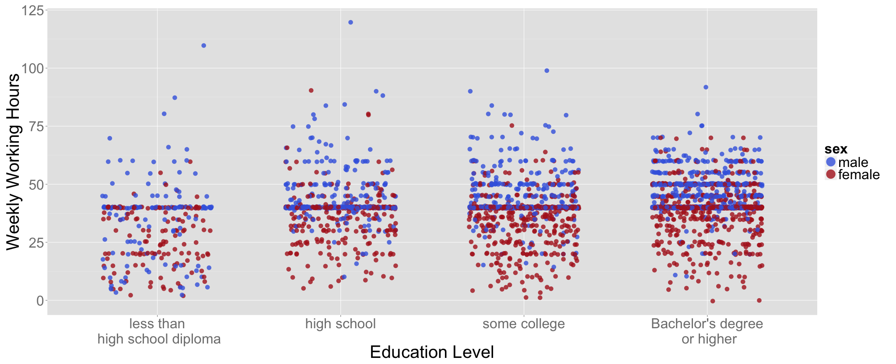
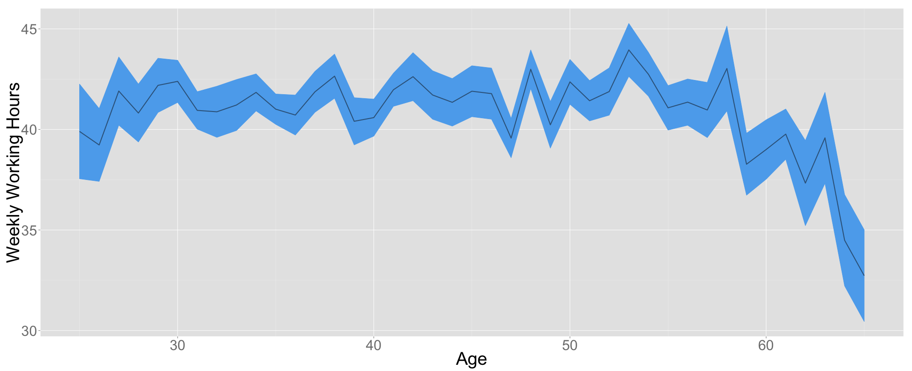
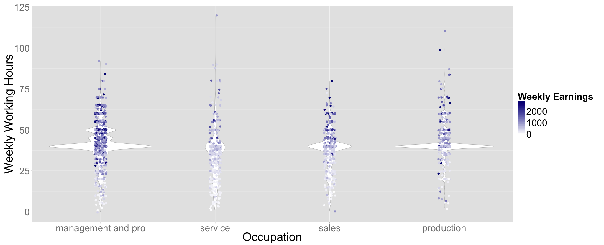
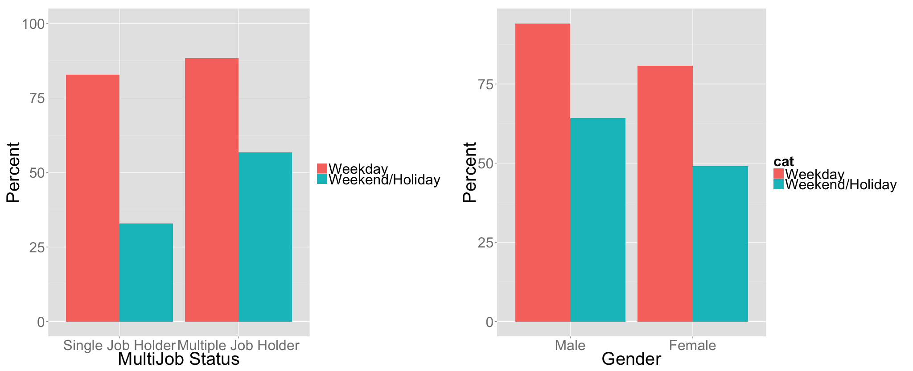
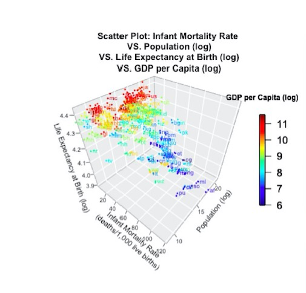

Data Science Portfolio
This page highlights several of my data science work, which are classified into two categories:Modeling and Data Analysis & Visualization.
These work were done in either R or Python.
MODELING
Predicting Location via a Statistical Indoor Positioning System
(Language:R)
Data Description:
1000,000+ measurements of signal strength recorded between a known hand-held device and 6 stationary WiFi access points (routers) within a building at the University of Mannheim.
DOWNLOAD DATA
Task:
Build a model to predict the location of a new unknown device based on the detected signals for the device.
Algorithm:
K-Nearest-Neighbour
Raw Data (Snippet):
# timestamp=2006-02-11 08:31:58 # usec=250 # minReadings=110 t=1139643118358; id=00:02:2D:21:0F:33;pos=0.0,0.0,0.0;degree=0.0; 00:14:bf:b1:97:8a=-38,2437000000,3; 00:14:bf:b1:97:90=-56,2427000000,3; 00:0f:a3:39:e1:c0=-53,2462000000,3; 00:14:bf:b1:97:8d=-65,2442000000,3; 00:14:bf:b1:97:81=-65,2422000000,3; 00:14:bf:3b:c7:c6=-66,2432000000,3; 00:0f:a3:39:dd:cd=-75,2412000000,3; 00:0f:a3:39:e0:4b=-78,2462000000,3; 00:0f:a3:39:e2:10=-87,2437000000,3; 02:64:fb:68:52:e6=-88,2447000000,1; 02:00:42:55:31:00=-84,2457000000,1
Data Cleaning:
- Used regular expressions to split lines and save the result as a data frame of character variables.
- Converted variables into a proper type (numeric or factor) and eliminated irrelevant variables.
- Performed exploratory data analysis to figure out the 6 designated MAC addresses to keep and get rid of the noise addresses.
- Re-organized the data frame to have a unique position-orientation combination in each row.
- Ended up with a 1328 x 12 matrix.
Modeling:
- Used K-Nearest Neighbors,i.e. the k closest training points (based on the Euclidean distance between signal strengths), to predict the new observation’s position (x,y) by a weighted mean of the (x,y) positions of the k training points, with the weights being:
\frac{1/d_{i}}{$$\sum_{i=1}^{k} \frac{1}{d_{i}}$$ }
where di is the distance to neighbour i. - Used 5-fold cross-validation on the offline data to determine the best k-nAngle combination to use. We used sum of squared errors to evaluate the performances of k = 1,2,...10, nAngle = 1,...8.
- Achieved minimum sums of squared error when k = 10 and nAngle = 4.
Validation with test data (110 measurements at 60 locations):

DATA ANALYSIS & VISUALIZATION
Analyzing a Complex National Survey
(Language:R)
Data Description:
The American Time Use Survey 2013 is a national survey on how, where and with whom Americans spend their time.
Two data files were selected to be used in this analysis:
- Activity file: contains information about how the 11,385 ATUS respondents spent their diary day, recorded with 413 measurements for each respondent.
- Respondent file: contains information about the 11,385 ATUS respondents, including their labor force status and earnings, recorded with 175 measurements for each respondent
Task:
Analyze how socio-demographic characteristics associate weekly working hours.
Raw Data(Snippet):
- Activity file: 11385 x 413 matrix. (.dat)
- Respondent file: 11385 x 175 matrix. (.dat)
> dim(act)
[1] 11385 413
> head(act)
tucaseid TUFINLWGT TRYHHCHILD TEAGE TESEX PEEDUCA PTDTRACE PEHSPNON
1 2.01301e+13 11899906 12 22 2 40 8 2
2 2.01301e+13 4447638 1 39 1 43 1 2
3 2.01301e+13 10377057 -1 47 2 40 1 2
4 2.01301e+13 7731258 -1 50 2 40 1 1
5 2.01301e+13 4725269 -1 45 2 40 2 2
6 2.01301e+13 2372791 -1 80 2 38 1 2
> dim(resp)
[1] 11385 175
> head(resp)
TUCASEID TULINENO TUYEAR TUMONTH TEABSRSN TEERN TEERNH1O TEERNH2 TEERNHRO
1 2.01301e+13 1 2013 1 -1 -1 -1 -1 -1
2 2.01301e+13 1 2013 1 -1 -1 -1 -1 -1
3 2.01301e+13 1 2013 1 -1 -1 -1 -1 -1
4 2.01301e+13 1 2013 1 -1 -1 -1 -1 -1
5 2.01301e+13 1 2013 1 -1 -1 -1 -1 -1
6 2.01301e+13 1 2013 1 -1 -1 -1 -1 -1
Data Cleaning:
- Selected variables of interest (e.g. gender, multiple job status).
- Merged useful variables from two files into one data frame and gave meaningful names and type(numeric or factor) to the columns.
- Coded all the non-response into NA.
- Prepared the data for using with survey package.
- Ended up with a 11385x24 matrix.
> dim(data)
[1] 11385 24
> head(data)
ID isWorker hasMultJob occ isHoliday numChild timeAlone timeChildCare
1 101130004 5 NA NA 0 3 295 365
2 101130112 1 2 1 0 1 131 296
3 101130123 4 NA NA 0 0 730 0
4 101130611 1 2 1 0 0 50 0
5 101130616 1 1 1 0 0 870 0
6 101130619 5 NA NA 0 0 915 0
Data Visualization:
Usual Weekly Working Hours for Male and Female at Different Education Levels 
Findings:
- The average weekly working hours for female is significantly lower than that for male, no matter at which education level.
- The highest weekly working hours is achieved by male, in all the education groups.
- Female with higher degrees tend to be more likely to work more than average hours.
Average Weekly Working Hours (with One Standard Deviation) for Ages 25-65 
Findings:
- The average weekly working hours peaks at around 53.
- The hyperbolic shape indicates introducing age² as a variable in the multi-variate linear model.
Average Weekly Working Hours and Earnings for Four Occupations 
Findings:
- Longer working hours do not correspond to more earnings: the person who works the longest hours is not the one who earns the most - true in all the four occupations.
- Working for longer hours might lead to higher earnings in sales positions, but it is not the case for management positions and professionals.
Percentage of Employed Persons who Worked on Weekdays and Weekends/Holidays 
Findings:
- Multiple job holders and males have higher percentage in working on both weekdays and weekends than single job holders.
Analyzing a Big Database
(Language:Python & SQLite3)
Raw Data:
A table storing at least 10,000,000 email addresses and 100,000 domains. Schema:
CREATE TABLE mailing ( addr VARCHAR(255) NOT NULL );
Task:
Write a Python script that updates another table which holds a daily count of email addresses by their domain name. Use this table to report the top 50 domains by count sorted by percentage growth of the last 30 days compared to the total.
Approach:
- Using regular expressions to extract domain infomation from the raw data and create a new data frame with domain names and entry dates.
- Update the new table Daily Count based on the new data frame.
- Use SQL commands to calculate total counts for each domain.
Code:
Python Script
Test Data Generator
3-D Scatterplot of Infant Mortality Rate and Related Variables Based on 2013 CIA Factbook (Language:R)
Raw Data:
XML formatted 2013 CIA Factbook. Data Source(large - will take a while to load)
Data Visualization:
Note: county codes and country names can be found in the appendix of the factbook.
